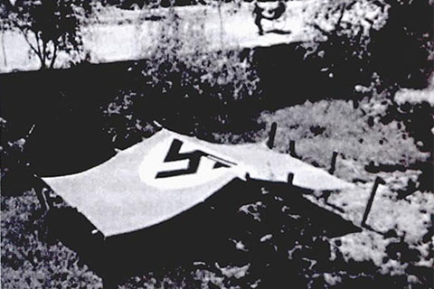

-
拉贝花了10天半的时间从上海回到南京，而这在和平时期只需40个小时。
1937年09月07日 -
拉贝和他的中国人设计建造了一个防空洞，虽然不算安全，但可以保护不受炮火和炮弹碎片的伤害。
1937年09月19日 -
拉贝在院子里撑起了一块长6米宽3米的帆布，并在帆布上画了一面有卐字标记的德国国社党的党旗，以减少其住处炮火攻击。
1937年09月20日 -
德国大使馆传来上海日军司令官的消息，从今天中午起,将再次开始加强对南京的轰炸，因而告诫所有的外国人尽快离开南京。为了保护他的中国佣人和职员连同他们的家属，拉贝选择留下来。
拉贝的战地日记
1937年09月21日 -
日本人在今天开始了他们宣布的狂轰滥炸——就是说推迟了一天：从上午10时30分到中午12时15分，从下午1时15分至2时30分。
1937年09月22日 -
中国飞机跟踪和进攻了远处飞来的六架日本飞机，中国飞机用机枪扫射，其中一架飞机垂直地栽了下去。
1937年10月05日 -
凡经常使用我的耐轰炸的防空洞者，必须遵守下述规定，即应该让孩子们和妇女们（无论是谁）占用最安全的位子，也就是防空洞中间的位子。男人们只可使用两边的坐位或站位。
有违反规定者，今后不得再使用本防空洞。
致我的客人们和本洋行成员的通知
约翰·拉贝1937年10月19日于南京
1937年10月19日 -
这里已乱成了一团，整个夜间大街上熙熙攘攘，汽车一辆接一辆，卡车甚至还有坦克一起缓慢而又沉重地、隆隆地向前开。德国人都打包行李，准备随时登上“库特沃”号离开。
政府的大迁移开始了
1937年11月17日 -
满载行李的人力车、手推车、小汽车和卡车还在日夜不停地开出城门去，大都开往江边，因为大多数人想去扬子江上游，逃往汉口或汉口以远的地方。与此同时，从北方来了许多新兵团，开进城里。人们看来要坚守这座城市。
士兵陆续开始来到南京守卫城市
1937年11月18日 -
约翰·拉贝同意加入主要由鼓楼医院的美国医生和在金陵大学任教授的传教士组成的国际委员会。试图建立一个难民区，让非战斗人员躲避。
1937年11月19日 -
国际委员会开会讨论成立了南京平民中立区，约翰·拉贝为“主席”。草拟了有关建立安全区的建议，交给日本大使。
1937年11月22日 -
今天是拉贝55岁生日，他收到了一个中国朋友要送两辆卡车，上面装有100罐汽油和200袋面粉的消息。这些物质支撑着日后难民们的生活。
1937年11月23日 -
公布南京安全区国际委员会成员名单
1937年11月29日 -
南京安全区国际委员会总部，宁海路5号。中国外交部长张群将其私宅交给德国大使馆使用，大使馆转交南京安全区国际委员会成员作为总部。
1937年12月01日 -
给南京安全区委员会答复如下：日本政府已获悉你们建立安全区的申请，却不得不遗憾地对此予以否决。若中国军队对平民及其财产处理失当，日本政府方面对此不能承担任何责任。但是，只要与日方必要的军事措施不相冲突，日本政府将努力尊重此区域。
日本方面对是否承认南京安全区给予答复
1937年12月2日 -
难民们开始陆陆续续搬进安全区。为了保障难民们得到日本人的保护，拉贝要求中国军人不得进入安全区。但是将中国军人从安全区清理出去的困难是很大的。士兵们非但没有如唐将军说许诺的那样撤出，反而继续挖掘新的战壕并在安全区内架设军用电话设施。
难民开始进入安全区，委员会做好准备工作以维护安全区的使用
1937年12月04日 -
据上海方面电台的报道（13时），日本人已经推进到了汤山，距离南京只有几个小时的路程。现在可以看见贫穷的百姓带着生活用品和铺盖从四面八方进入我们的安全区，这些人还不是最贫穷的，他们这是先头部队，他们还有点钱财可以花钱借住在安全区内的亲戚朋友处。
日本人已经推进到了汤山
1937年12月7日 -

全剧的最后一幕开始了——猛烈的炮击。拉贝打开两扇大门，把想进来的人们全放了进来，躲在德国国旗下。
1937年12月12日 -

日本人在昨天晚上只攻占了几座城门，他们还没有推进到城内。国际安全委员会成员在10分钟内建立了国际红十字会
1937年12月13日 -
日本人每10人~20人组成一个小分队，他们在城市中穿行，把商店洗劫一空。他们砸开店铺的门窗，想拿什么就拿什么。
日本人先头部队已进入南京城内
1937年12月14日 -
1)12月15日，安全区卫生委员会第二区的6名街道清扫工在他们位于鼓楼的住所里被闯进的日本士兵杀害，另外一名清洁工被刺刀严重刺伤，日本士兵没有任何明显的理由！如上所述，这些人士我们安全区的雇员。
拉贝向福田德康写信，大致描述目前安全区的局势和日本士兵的各种暴行，希望他能阻止这些暴行。
1937年12月16日 -
2）12月15日下午4时，在金陵女子文理学院门口附近，一辆载有大米的卡车被日本士兵抢走。
3)12月14日夜晚，安全区第二区的全体居住人们被赶出房子，然后洗劫一空。第二区区长本人被日本人抢掠过两次。
拉贝向福田德康写信，大致描述目前安全区的局势和日本士兵的各种暴行，希望他能阻止这些暴行。
1937年12月16日 -
4）12月15日夜晚，7个日本士兵闯进金陵大学图书馆大楼，拖走7名中国妇女，其中3名妇女被当场强奸。
5)
6)
……
15)
拉贝向福田德康写信，大致描述目前安全区的局势和日本士兵的各种暴行，希望他能阻止这些暴行。
1937年12月16日 -
有数百名已经解除武装的中国士兵被拖出安全区枪毙，其中有50名安全区的警察也要照军法执行处决，据说是因为他们放进了中国士兵。
1937年12月16日 -
日本人闯入拉贝的房子强奸妇女，还谎称是搜索中国士兵。还不断有中国士兵被屠杀。然而日本指挥官不闻不问。
1937年12月17日 -
伍长德是南京警察部队的一名警员。他们1000多人在城外被日本人用机枪扫射，并被柴火烧。他是其中唯一幸存的。
1937年12月18日 -
16）12月15日，一名被持刀刺伤的中国人来到大学医院，报告说，日本士兵将他和另外5名中国男子从安全区抓走，要求他们往下关运送弹药；到达下关后，他们六人都被日本士兵用刺刀戳伤，只有他一人幸免于难，来到了金陵大学医院接收治疗。
日本士兵在南京安全区的暴行
1937年12月19日 -
17）根据在福建路6号德国公司何中记联合公司工作的王郁辉先生的报告，12月15日早晨8时左右，好几个日本士兵闯到他那里，抓住他，将他在德国机构注册的工作证轻蔑地扔在地上……
日本士兵在南京安全区的暴行
1937年12月19日 -
18)12月15日夜间，一批日本人闯进小桃园旁边的金陵大学的大楼里，强奸了30名妇女，其中有些妇女遭强奸达6次之多。
19)
……
70)
日本士兵在南京安全区的暴行
1937年12月19日 -
71）12月19日下午5时许，一年轻男子在母亲的陪同下被送到了我们总部，日本士兵无缘无故用刺刀刺他的胸部。菲奇和史迈士模式2位先生在前往日本大使馆递交一份日本士兵暴行报告（16号~70号）时，将这位年轻人带往大学医院。
……96)
暴行并未因拉贝他们的上报而减少，日本士兵在南京安全区的暴行
1937年12月20日 -
日本人正在纵火焚烧城市，昨天一个晚上，城市就有6处火灾。
1937年12月21日 -
97）12月17日上午8时~9时，戴籁三夫人位于鼓楼头条巷3号的私人车库里一辆汽车被偷走。
98
……
113
日本士兵在南京安全区的暴行
1937年12月21日 -
日本人通知拉贝，现在日本人要建立一个难民委员会，所有的难民都必须登记。以前的士兵必须安置在一个特殊的营地。城市仍然在燃烧
1937年12月22日 -
114）12月19日，下午2时许至天黑前，位于汉口路23号、并贴有禁止日本士兵入内的日语布告的里格斯住宅……
……
136)
暴行并未因拉贝他们的上报而减少，日本士兵在南京安全区的暴行
1937年12月22日 -
中国的新年：佣人和雇员都隆重地向拉贝拜年。难民们在院子里排着整齐的队伍向拉贝三鞠躬。他们献给拉贝一块长3米、宽2米的红绸布，感谢他的帮助。
1938年01月31日 -
拉贝被迫登上英国炮舰“蜜蜂”号离开他心心念念的南京
1938年02月23日